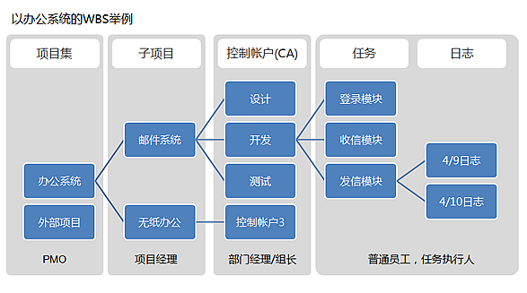

WSS 1.3.0 升级说明
新增功能
1，工作分解结构(WBS)，可以将大项目分解成多个子项目，同时，适合将需要多人协作完成的任务分解给不同的人员完成；
2，项目详情页，将按照任务的结构来展现任务；
3，一级导航增加“日志”，可展现当前用户的日志和系统所有日志，并允许评论；
4，交互优化，加强沟通，并突出“我”的概念，任务、日志、项目、文档相应调整；
5，去掉了“高级搜索入口开关”的功能；
6，数据库优化，提升查询速度，任务理论查询速度提高85倍，并节省空间25%；
7，修复有可能导致SQL注入的漏洞（感谢乌云网友lion(lp)反馈的漏洞）；
8，修复上传SHELL漏洞（感谢乌云网友hfy反馈的漏洞）。
使用方式
由于WSS1.3.0引入了WBS的概念，所以项目与任务的管理形式较以前的版本有很大不同：
1，可以将大型项目分解成不同的子项目；
2，对于子项目，可以按任务类型来分解子任务，比如，项目A，可以分解出 设计、开发、测试 三个子任务（这一级别的任务称为“控制账户 （CA）”），这三个任务可以分配给相应的负责人，如开发经理或组长，再由相应的的负责人继续细化分解任务给组员，如此项目经理只需要跟踪项目下的控制账户，而具体的到某个节点的任务由相应的负责人或组长跟踪即可。

更新说明
1) 备份你的数据库，使用phpmyadmin导出tankdb数据库(导出后可以再试一下可否正常导入)；
2) 备份你服务器上WSS目录下的/upload目录，与/editor/attached目录；
3) 1.2.8版以前的用户（不包括1.2.8），需要使用phpmyadmin将WSS.1.3.0 压缩包中的 /database/ tk_item.sql 文件导入数据库；
4) 将WSS 1.3.0压缩包中的 /update/ 目录下的 upgrade.php 拷贝至你服务器上要升级的WSS目录中；
5) 确认已经使用管理员权限登录WSS（此时升级操作还未进行，登录的还是您老版本的WSS）；
5) 在浏览器中访问 upgrade.php ，如： http://你的服务器地址/wss/upgrade.php ；
6) 按照提示进行操作，并等待数据库升级完成，升级过程中不要关闭升级页面；
7) 数据库升级完成后，返回首页，并退出登录（重要）；
8) 用 WSS 1.3.0 压缩包中的 WSS目录覆盖你服务器上的WSS目录即可完成升级（如修改过数据库连接文件config/tank_config.php，则升级后需要重新配置）；
9) 删除你服务器上WSS目录中的 upgrade.php 文件；
10) 如升级后样式错乱，使用ctrl+F5 强制刷新；
11) 1.2.8版本之前的用户升级后，可能出现用户不可见的情况，只要相应的用户登录一次系统即可。
免责声明
WSS为使用者根据需要自愿下载使用，White Shark System以及WSS的作者，对WSS使用过程中造成的任何数据丢失及其他风险不承担任何责任。